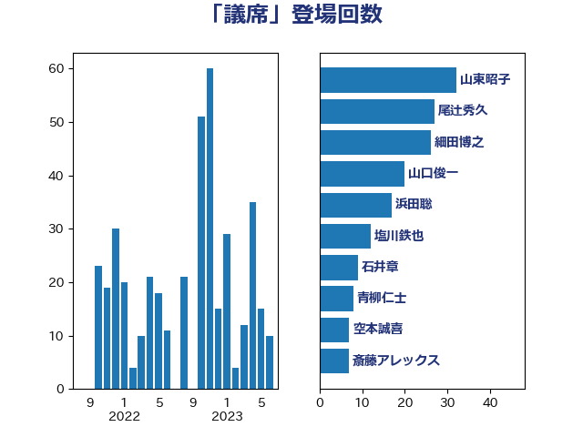

単語「議席」

| 山東昭子 | 自由民主党 | 32 回 |
| 尾辻秀久 | 無所属 | 27 回 |
| 細田博之 | 自由民主党 | 26 回 |
| 山口俊一 | 自由民主党 | 20 回 |
| 浜田聡 | NHK党 | 17 回 |
| 塩川鉄也 | 日本共産党 | 12 回 |
| 石井章 | 日本維新の会 | 9 回 |
| 青柳仁士 | 日本維新の会 | 8 回 |
| 空本誠喜 | 日本維新の会 | 7 回 |
| 斎藤アレックス | 国民民主党 | 7 回 |
| 新藤義孝 | 自由民主党 | 6 回 |
| 階猛 | 立憲民主党 | 5 回 |
| 足立康史 | 日本維新の会 | 5 回 |
| 高木毅 | 自由民主党 | 4 回 |
| 藤田文武 | 日本維新の会 | 4 回 |
| 牧原秀樹 | 自由民主党 | 4 回 |
| 源馬謙太郎 | 立憲民主党 | 4 回 |
| 東徹 | 日本維新の会 | 4 回 |
| 岸田文雄 | 自由民主党 | 4 回 |
| 山田宏 | 自由民主党 | 4 回 |
| 山本太郎 | れいわ新選組 | 4 回 |
| 宮本徹 | 日本共産党 | 4 回 |
| 吉川沙織 | 立憲民主党 | 4 回 |
| 馬場伸幸 | 日本維新の会 | 3 回 |
| 櫛渕万里 | れいわ新選組 | 3 回 |
| 林芳正 | 自由民主党 | 3 回 |
| 岩谷良平 | 日本維新の会 | 3 回 |
| 山添拓 | 日本共産党 | 3 回 |
| 山岸一生 | 立憲民主党 | 3 回 |
| 井上哲士 | 日本共産党 | 3 回 |
| 鈴木俊一 | 自由民主党 | 2 回 |
| 藤井比早之 | 自由民主党 | 2 回 |
| 羽田次郎 | 立憲民主党 | 2 回 |
| 泉健太 | 立憲民主党 | 2 回 |
| 沢田良 | 日本維新の会 | 2 回 |
| 木村英子 | れいわ新選組 | 2 回 |
| 小西洋之 | 立憲民主党 | 2 回 |
| 太栄志 | 立憲民主党 | 2 回 |
| 堀場幸子 | 日本維新の会 | 2 回 |
| 和田有一朗 | 日本維新の会 | 2 回 |
| 中司宏 | 日本維新の会 | 2 回 |
| 麻生太郎 | 自由民主党 | 1 回 |
| 高木かおり | 日本維新の会 | 1 回 |
| 高市早苗 | 自由民主党 | 1 回 |
| 長浜博行 | 無所属 | 1 回 |
| 金子道仁 | 日本維新の会 | 1 回 |
| 野間健 | 立憲民主党 | 1 回 |
| 野田国義 | 立憲民主党 | 1 回 |
| 重徳和彦 | 立憲民主党 | 1 回 |
| 輿水恵一 | 公明党 | 1 回 |
| 西村明宏 | 自由民主党 | 1 回 |
| 藤岡隆雄 | 立憲民主党 | 1 回 |
| 蓮舫 | 立憲民主党 | 1 回 |
| 茂木敏充 | 自由民主党 | 1 回 |
| 舩後靖彦 | れいわ新選組 | 1 回 |
| 舟山康江 | 国民民主党 | 1 回 |
| 稲田朋美 | 自由民主党 | 1 回 |
| 福島伸享 | 無所属 | 1 回 |
| 福山哲郎 | 立憲民主党 | 1 回 |
| 石垣のりこ | 立憲民主党 | 1 回 |
| 石井啓一 | 公明党 | 1 回 |
| 玉木雄一郎 | 国民民主党 | 1 回 |
| 牧山ひろえ | 立憲民主党 | 1 回 |
| 渡辺創 | 立憲民主党 | 1 回 |
| 浜地雅一 | 公明党 | 1 回 |
| 浅田均 | 日本維新の会 | 1 回 |
| 浅尾慶一郎 | 自由民主党 | 1 回 |
| 梅村みずほ | 日本維新の会 | 1 回 |
| 柴愼一 | 立憲民主党 | 1 回 |
| 柳ヶ瀬裕文 | 日本維新の会 | 1 回 |
| 杉本和巳 | 日本維新の会 | 1 回 |
| 早坂敦 | 日本維新の会 | 1 回 |
| 市村浩一郎 | 日本維新の会 | 1 回 |
| 島尻安伊子 | 自由民主党 | 1 回 |
| 山谷えり子 | 自由民主党 | 1 回 |
| 山本順三 | 自由民主党 | 1 回 |
| 山本剛正 | 日本維新の会 | 1 回 |
| 小野泰輔 | 日本維新の会 | 1 回 |
| 小渕優子 | 自由民主党 | 1 回 |
| 小倉將信 | 自由民主党 | 1 回 |
| 寺田稔 | 自由民主党 | 1 回 |
| 寺田学 | 立憲民主党 | 1 回 |
| 宮本岳志 | 日本共産党 | 1 回 |
| 守島正 | 日本維新の会 | 1 回 |
| 城井崇 | 立憲民主党 | 1 回 |
| 北神圭朗 | 無所属 | 1 回 |
| 佐々木さやか | 公明党 | 1 回 |
| 伊藤孝江 | 公明党 | 1 回 |
| 伊藤孝恵 | 国民民主党 | 1 回 |
| 仁比聡平 | 日本共産党 | 1 回 |
| 上川陽子 | 自由民主党 | 1 回 |
| 三木圭恵 | 日本維新の会 | 1 回 |